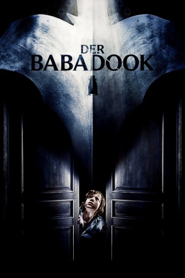
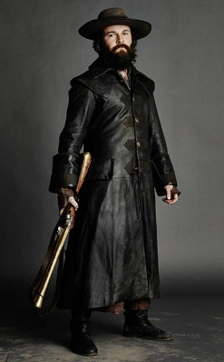

#1181 Der Babadook
 
 IMDB-Wertung: 6.8 / 10
IMDB-Wertung: 6.8 / 10  Metascore: 86
Metascore: 86 
Die alleinerziehende Mutter Amelia hat den sechs Jahre zurückliegenden Tod ihres Mannes noch immer nicht ganz überwunden. Hinzu kommt, dass ihr Sohn Samuel ihr zunehmend Kummer bereitet. So quälen den Jungen Alpträume von einem Monster, das ihn und seine Mutter umbringen will. Als er dann auch noch eine alte Schauergeschichte mit dem Titel "Mister Babadook" findet, verstärkt dies seine Angst nur noch, verkündet jenes Buch doch, dass man die titelgebende Kreatur nicht mehr loswerden kann, sobald man einmal einen Blick hinein geworfen hat. Von seiner Furcht übermannt, wird Samuel immer unberechenbarer und gewalttätiger. Dennoch glaubt die besorgte Amelia zunächst nicht an eine übernatürliche Heimsuchung. Doch nach und nach wird auch sie von verstörenden Erscheinungen geplagt. Hat ihr Sohn vielleicht doch die ganze Zeit Recht gehabt?
Jahr: 2014
Dauer: 93 Minuten
FSK: 16
Land: Australien Studio: Capelight PicturesTonspuren: DD2.0 - ,
Untertitel: Englisch,
Auflösung: 1080p (1920x800) Größe: 6860 MB
Genre: Drama, Horror
Regisseur: Jennifer Kent
Drehbuch: Jennifer Kent
Soundtrack: Jed Kurzel
Darsteller:
 Essie Davis als Amelia
Essie Davis als Amelia- Noah Wiseman als Samuel
-  Daniel Henshall als Robbie
- Benjamin Winspear als Oskar
 Tiffany Lyndall-Knight als Supermarket Mum
Tiffany Lyndall-Knight als Supermarket Mum- Craig Behenna als Warren
- Cathy Adamek als Prue
- Peta Shannon als Eastern Suburbs Mum
- Adam Morgan als Police Sergeant
- Hayley McElhinney als Claire
- Barbara West als Mrs. Roach
- Chloe Hurn als Ruby
- Jacquy Phillips als Beverly
- Bridget Walters als Norma
- Annie Batten als Old Woman in Corridor
- Tony Mack als Principal
- Carmel Johnson als Teacher
- Lucy Hong als Supermarket Little Girl
- Sophie Riggs als Checkout Chick
- Lotte Crawford als Kissing Woman
- Chris Roberts als Kissing Man
- Terence Crawford als Doctor
- Stephen Sheehan als Magician
- Pippa Wanganeen als Eastern Suburbs Mum
- Michelle Nightingale als Eastern Suburbs Mum
- Michael Gilmour als Young Policeman
- Craig McArdle als Young Policeman
- Alicia Zorkovic als Fast Food Mum
- India Zorkovic als Fast Food Kid
- Isla Zorkovic als Fast Food Kid
- Charlie Crabtree als Fast Food Kid
- Ethan Grabis als Fast Food Kid
- Sophie Allan als Fast Food Kid
- John Maurice als Car Guy
- Tim Purcell als The Babadook
- Hachi als Bugsy
Datei: X:\2014(A-F)\Babadook, Der (2014, FSK16, 1920x800).mkv seit 02.06.2015
Festplatte: HD 2013(I-Z)-2014(A-Z)
 Es gibt insgesamt 119 Filme in der Gruppe '2014(A-F)'
Es gibt insgesamt 119 Filme in der Gruppe '2014(A-F)'